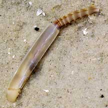
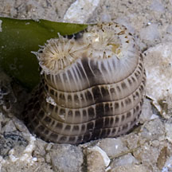
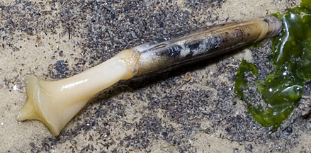

|
|
| bivalves text index | photo index |
| Phylum Mollusca > Class Bivalvia |
| Razor
clams Family Solenidae updated May 2020
Where seen? These almost cylindrical clams can move surprisingly quickly and are rarely seen as they are usually buried in the sand. They are sometimes seen above ground on the undisturbed sandy shores near seagrass areas on our northern shores. They are adapted for burrowing deeply in soft bottoms. |
 Razor clam (Solen brevisiima) Foot burrowing in (left) and siphon extended (right). Chek Jawa, Jan 04 |
 Siphon of a large buried razor clam Changi, Jul 11 |
| Built for digging: 1.5-5cm long. The razor clam is a strong and quick burrower. The somewhat rectangular and cylindrical two-part shell is thin, narrow and smooth, allowing the animal to slip easily through the sand. On one end of the shell emerges a strong foot that it uses to burrow quickly into wet sand. On the other end a long siphon sticks out to the surface to breathe and feed. The siphon breaks easily when the animal is disturbed. In this way, the animal probably avoids being dragged out of the sand by its siphon. |
|
 Bulbous tip of the muscular foot. Pasir Ris, Dec 11 |
|
|
| What do they eat? Like other bivalves,
razor clams are filter feeders. The buried clam sticks its long siphon
out to the surface. When submerged, it sucks in a current of water
through the siphon. It uses its enlarged gills to sieve food particles
out of this current. Human uses: Larger razor shells are edible and are collected as food. Like other filter-feeding clams, however, razor clams may be affected by red tide and other harmful algal blooms. Such clams can then be harmful to eat. |
*Species are difficult to positively identify without close examination.
On this website, they are grouped by external features for convenience of display.
| Razor clams on Singapore shores |
On wildsingapore
flickr
|
| Other sightings on Singapore shores |
| Family
Solenidae recorded for Singapore from Tan Siong Kiat and Henrietta P. M. Woo, 2010 Preliminary Checklist of The Molluscs of Singapore.
|
Links
References
|